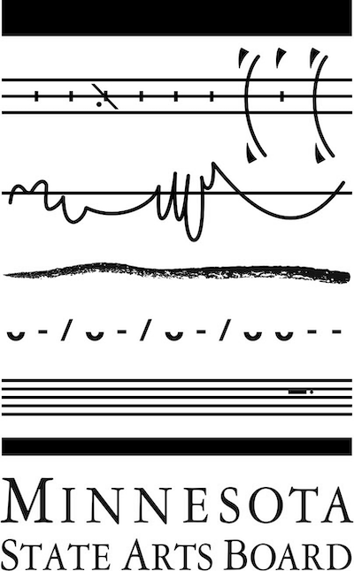
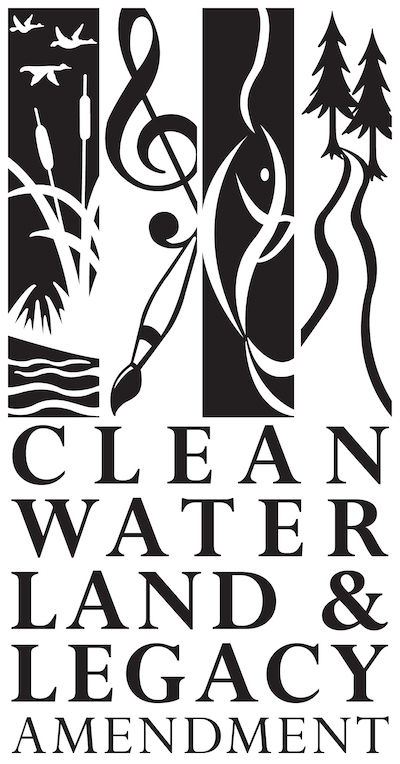

project links
such a long long time ...
it was r & d
a wandering ::: an absence ::: an electric spider
Your feedback is always welcome.
such a long long time ...
it was r & d
a wandering ::: an absence ::: an electric spider
The tenets of universal design are synergistic with the original dreams of a free and open, accessible web. I choose the accessible, affordable, community-driven tools of the web with purpose. Code is a human-readable text ::: a literature, a score, a script. The dream of the early internet was similar to the vision of radio, cable-access television, video. It promised an accessible, affordable medium for community-driven transmission of culture. It is difficult to remember that vision in today's landscape of profit-driven, commerce-mediated web silos. We produce content for free. Our creativity is shaped by opaque, proprietary tools.
Old-school codework is becoming a folk art as the mainstream technology world is subsumed by proprietary platforms. Generative, networked, "ecological" work has a materiality I am interested in bringing to the surface. It is important to preserve not only the experience of the living work itself but also its working levers and gears :::: its language of motion and change ::: the machine and networked environment in which it was conceived and presented.
Kathy McTavish is a fiscal year 2022 recipient of a Creative Support for Individuals grant from the Minnesota State Arts Board. This activity is made possible by the voters of Minnesota through a grant from the Minnesota State Arts Board, thanks to a legislative appropriation from the arts and cultural heritage fund.
 